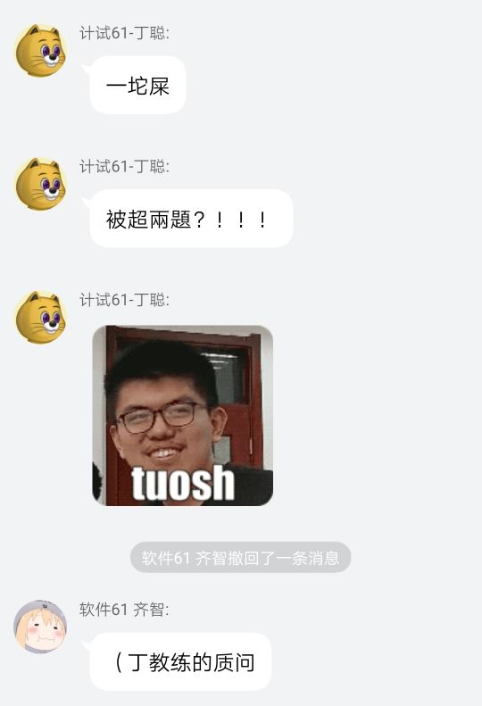
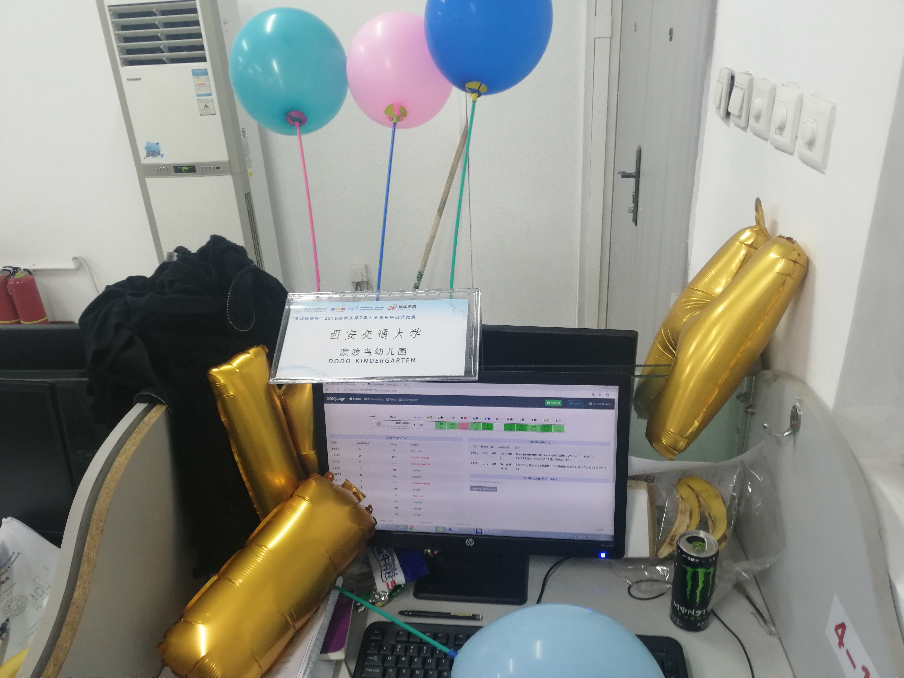
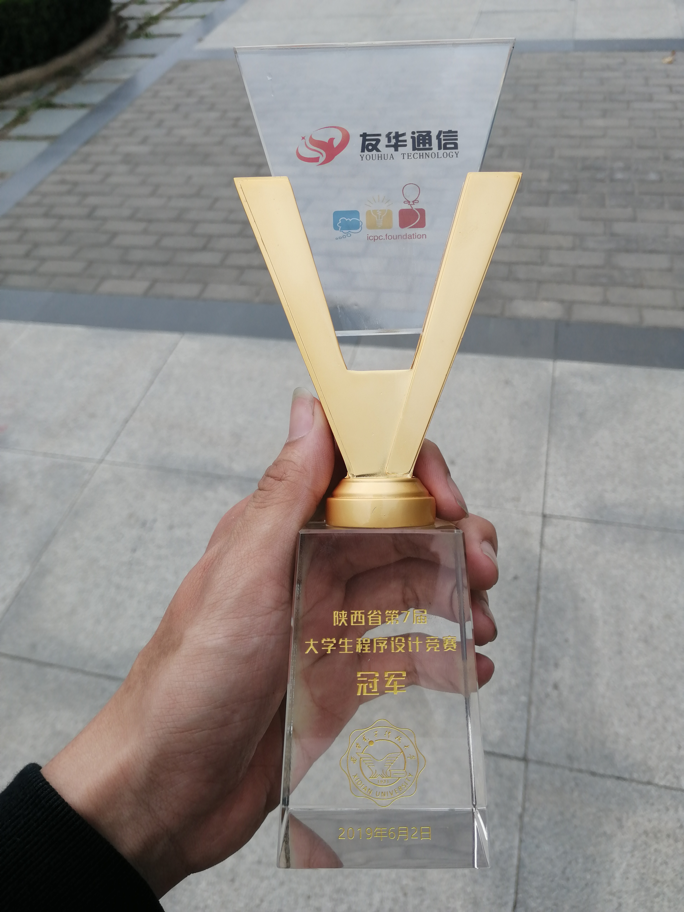
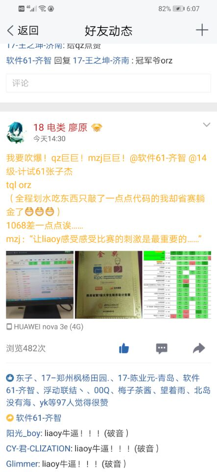
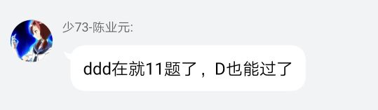
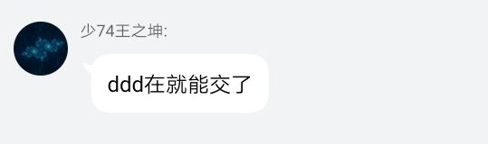

游记
夺冠了！作为和 nocriz，hdmmblz 一起组队打的第一场比赛，这也算是一个开门红吧，这次的解题策略与团队合作等诸多方面都做得还不错，出的锅也不算特别多。不过这也仅仅是一个省赛，仅仅是一个起点，以后的路还长，以后的目标需要远大！我们有了方向，有了动力，更有了顶天立地的决心。
不过这次去除两个高中打星队我们才夺的冠，那两个队一个 11 题，一个 10 题，还是被高中省队爷吊打了啊，感觉还是要提高啊。（被“丁教练”教育了qaq）

准备
上午 06:40 就早早地起床，集合，前往 XDU。路上水掉了 wzk 讲的一个张好风出的构造题，感觉海星。
到了 XDU ，拿好衣服之后打了一个极为自闭的热身赛。首先是发现电脑的 Ubuntu 双系统里面居然没有 vim，没有各种常见编辑器，打算换用 gedit 之后，发现居然没有网络，无法查看题面。一阵忙乱之中我们又改用 windows + Dev-cpp，结果发现电脑又没有 python，g++也没有加入 PATH 环境变量里。这时开始看热身赛的题目，wzk 几分钟秒掉了 A ，我提出了 B 题最短路+欧拉回路的做法，然而没有人熟悉欧拉回路怎么写！！！稍微讨论回忆了一下，构思好代码之后 wzk 开始写。cyy 和我思博了，一直对着 C 题自闭。最后 B 没写出来， C 也没做出来。结果 wzk 赛后直接一眼秒掉了 C。总的来看，热身赛什么环境也没来得及测，题目也只 A 了一道，感觉主要就是用来 rp++ 了。
下图是我们比赛的机位：

正赛
参加完豪华（简单）的露天开幕式之后马上就要正赛了，感觉心里还蛮没底的。稍微调整了下状态，比赛开始了（喂，比赛没开始为什么大家都开始启封试题册了啊！）。wzk 悄悄以惊人的手速 10 分钟 1A 了三道签到题EFL 并拿到了 E 题的一血，简直太强了，这三道题我场上甚至根本没看。
之后开始多线程， wzk 看 C 写 C，结果 wa 了；这大概经过了 20 分钟，与此同时我和 cyy 互相交换了 H，I，J 三道题的题意。I 题稍微讨论了一下就会了，wzk 打印了 C 题代码，cyy 给 wzk 讲了 I ，wzk 开始写。我发现 H 是擅长的构造，我又发现这题和华东师大校赛的 C 题极为相似，于是决定仔细想 H，过了一会儿就会做了，给 cyy 讲了做法，cyy 觉得很正确，于是我仔细构思了下代码，觉得很好写。wzk 写好 I了，可是 wa 了，找出了好几个细节错误。打印代码后，我上机写 H。cyy 和 wzk 一起小黄鸭，发现了所有错误，改了之后提交，总算通过了 I 题，并拿到了一血。过了一会儿，我写完了 H ，测了测样例，手测几组数据，觉得稳得很，于是提交，1A了 H 题，并且还拿到了这道题一血。这时我们的士气很高涨，排在 rank 1，I，H 题仅仅有我们队通过，第二名仅仅才 4 道题，拿了两个一血，时间也才仅仅过去 74 分钟。
继续多线程，wzk 发现交大“免费赠送AC帽”队拿到了 B 题的一血，于是跟了下榜，发现是思博题，于是开始写。cyy 提出几种 J 做法，感觉找到了靠谱做法了，于是又屯下一题。wzk A掉了 B 题，cyy 开始给 wzk 讲 J 题，我把没看的题目都看了一遍，主要在想 D 题。wzk 开写 B 了，cyy 提出 K 题解法，但是我有点怀疑正确性。wzk J 题神秘地 TLE 了，在我强烈要求下不辞辛劳把 cin 改为了 fread+getchar ，又手动开了 O3，Ofast，然后就神奇通过了 J 题。wzk 确认了 cyy K 题解法的正确性，cyy 上机写 K 题，用了 20 多分钟也写好过掉了 K 题 。
与此同时，我一直在试图对 D 题进入大型分类讨论。我分了一维三种情况以及二位的六种情况，都将思路整理到之上了。wzk 建议看一看 C ，这时我们才意识到 WA 了很久扔在那里的题目。wzk 打算写 A 题试一试，我和 cyy 想了 C 的一些假做法，最后得到的结论 wzk 说就是当时 wa 的代码的思路。我发现有个小情况忘记考虑了，加上去之后大家不太相信正确性，可是我觉得很稳，结果交上去就 AC 了C题。
这时已经封榜了，我们手上有DAG三道题，有 40 分钟的时间。D题所有情况已经讨论完成了，A 题wzk写好了，但是交上去铁定会 TLE。wzk 试图优化 A ，可是没什么头绪。 D 题代码量巨大，细节繁琐，我硬着头皮上去写，cyy 在旁别即时检查。结果最后 2 分钟终于写完了代码，可是没时间调试了，直接交上去 WA 了，本地测了下也过不了样例，没有办法了，被高中生吊打了。

比较幸运的是，正式选手中我们还是拿到了 rank 1，拿到了冠军奖杯。（免费赠送AC帽队第四，他们差点就也 9 题了，真为他们可惜 qwq）

总的来看：
- Solved during contest:
9/12 - Upsolved:
9/12 - Orally upsolved:
9/12 - Rank:
1/105(Official),3/111(Full rank)
出现的问题集锦：
- （热身赛）没有人会熟练实现欧拉回路
- 大数据读入时仍使用
cin - C 题 wzk 开始想的是正解，结果因为小情况 wa 而误以为算法假了
- 最后一个小时还是划了，D 讨论得还是不全面，主要是没有信心，写代码的时候中途我掉线了。
- A 题写好后以为会 TLE 就没有提交，但实际上复杂度是正确的。
做得比较好的地方集锦：
- 基本做到了多线程
- 让 wzk 去签到
- 快速做出了构造题
- cyy 力排众议，写了 K 题看似无脑的做法通过了
- 每次提交前的检查还算仔细
附录
一些杂感。
交大“给我一顶AC帽”队：（临时组建的，互相认识时间也不长）拿了第四，胜利之后发说说互相吹，互相捧，互相鼓励，一片欢乐：

我们队：（已确认区域赛要一块打，以后很多比赛都可能一起）本次比赛拿了正式选手冠军。被高中生队锤了，但是队友们显然觉得如果 ddd 来才能打败他们，并且语气里丝毫没有把我当做团队的一员：（这让我怎么插话啊，我又怎么不让他们满意了啊，咱也不知道，咱也不敢问）

队友们发说说的内容（没有任何有关团队互相勉励的内容）：
被牛逼队友瞧不上了。唉，菜鸡队友就是不配有存在感。 唉，感觉自己以前从来没有遇到过存在感的问题，可现在发现这种问题还挺严重。我发现自己其实是一个情感细腻的人，我可能过度敏感了，这种问题仿佛只有我会遇到。但我仿佛看到之后。但是为什么我始终无法融入校队群？始终不是特别敢发言？因为还是感觉没有收到认可啊。我也想被鼓励，我也想被赞赏，我也渴望存在感，可是这次赛后貌似队友都没有一句真正对我鼓励的话，在各个群里说话时也仿佛我没打过这场比赛，全是他们两个的功劳。
其实在比赛中，我又不是全程划水，开场一个小时拿了一个后期题的一血（这题最后也才5通过），后期查出了好几个小错，帮忙确认了好几道题目做法的正确性。
不过也无所谓，毕竟还是菜呗。就当我今天胡乱发了些牢骚，无事发生过吧。算了，就把自己当一个傻子看待，不想那么多。我也确信他们俩估计也不会仔细到看到这个位置，也不会揣测我想了什么，即使看到了也不会有什么帮助。真正最关键的还是提高自己。之后还有文化课的期末考试，还有四级，为自己加油！